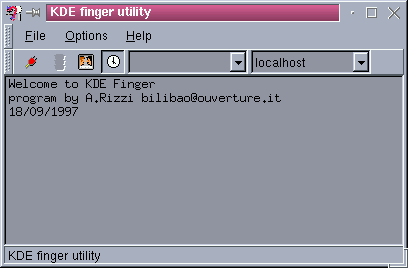

In this version:
-Timed auto finger
-User list
-Server list
-Setup dialog
-Ktalk launcher
-New Html
Kfinger Main window

In kfinger mainwindow you find:
The menu Bar
The tool Bar
The status Bar
The Finger output
-FILE:
Finger Now: Execute finger reading User & Server from the ToolBar
Talk..: Execute the TalkLauncher
Quit: Quit!
-OPTIONS:
Setup: Execute Setup
-HELP:
About: About Kfinger
Help: Execute KDEhelp
Button1: Execute finger
Button2: Stop current finger session
Button2: Execute TalkLauncher
Button3: Time Auto finger (On/Off)
Combo1: User
Combo2: Server
Here Kfinger put the messages or the status of current kfinger session